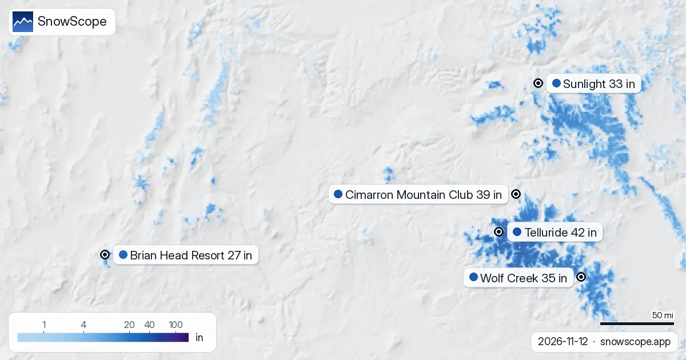
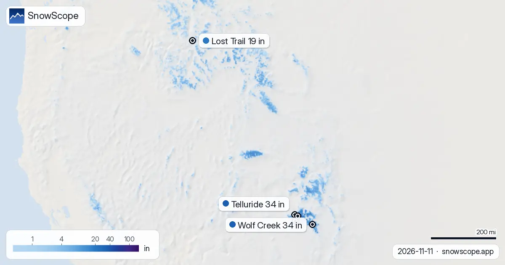

Cimarron Mountain Club، 39 إنش ديال التلج: العلو ديال اليوم فالجهة الفوقانية (12 نونبر)
42 إنش (106 سم): هادا هو التلج اللي كاين اليوم فالجهة الفوقانية ديال Telluride. أكثر تلج فغرب ميريكان اليوم: Telluride، تقريبا 42 إنش (106 سم) فالجهة الفوقانية (الموديل). التانية Cimarron Mountain Club، 39 إنش (98 سم)؛ التالتة Wolf Creek، 35 إنش (88 سم). الحساب ديال اليوم فغرب ميريكان: 132 محطة من 195 فيهم التلج فالعلو، و 57757 ميل² (149590 كم²) ديال الأرض اللي فيها التلج. الموديل كيصيب كثر من الحدس، وأقل من اللي كنبغيو.
شوف توقعات التلج مباشرة ديال Cimarron Mountain Club فالتطبيق ديال SnowScopeالعلو ديال التلج، التنبيهات والخريطة 3D، فابور.الخريطة ديال التلج اليوم
المساحة البيضا فالخريطة دازت من 64850 ميل² (167960 كم²) (10 نونبر) ل 57757 ميل² (149590 كم²) اليوم، والتوقعات كتقول 69201 ميل² (179230 كم²) نهار 15 نونبر.
Telluride حسب العلو، من الموديل ديالنا: الفوق 38 إنش (96 سم) (12507 قدم / 3812 م)، الوسط 2 إنش (6 سم) (10620 قدم / 3237 م)، التحت 0 إنش (0 سم) (8734 قدم / 2662 م).
| المحطة | العلو ديال التلج | تلج جديد، 72 س | جاي، الأيام الجاية | الفوق |
|---|---|---|---|---|
| Telluride | 42 إنش (106 سم) | 0 إنش (0 سم) | 5 إنش (13 سم) | 12507 قدم (3812 م) |
| Cimarron Mountain Club | 39 إنش (98 سم) | 0 إنش (0 سم) | 3 إنش (7 سم) | 11355 قدم (3461 م) |
| Wolf Creek | 35 إنش (88 سم) | 0 إنش (0 سم) | 4 إنش (11 سم) | 11762 قدم (3585 م) |
| Sunlight | 33 إنش (84 سم) | 0 إنش (0 سم) | 1 إنش (3 سم) | 9849 قدم (3002 م) |
| Brian Head Resort | 27 إنش (68 سم) | 0 إنش (0 سم) | 6 إنش (16 سم) | 10909 قدم (3325 م) |

التحقق بالمحطات
محطة القياس Beartown (11581 قدم / 3530 م) كتزيد قياس حقيقي: 30 إنش (76 سم) فالأرض نهار 10 نونبر. التحقق من الأرض، محطة Rat Creek (11680 قدم / 3560 م): 23 إنش (58 سم) فالأرض نهار 10 نونبر، 1 إنش (3 سم) جديد ف 24 ساعة. التحقق من الأرض، محطة Red Mountain Pass (11060 قدم / 3371 م): 23 إنش (58 سم) فالأرض نهار 10 نونبر.
شحال حنا متأكدين؟ القيم ديال المحطات تقديرات ديال الموديل للجهة الفوقانية؛ محطات القياس قياسات، كل وحدة فنقطة وحدة فالتاريخ المكتوب.
واش هادشي عادي؟
Wolf Creek، 11010 قدم (3356 م): 26 إنش (65 سم) اليوم. هادشي كيفوت هاد التاريخ ف 31 من 46 ديال الشتوات اللي فاتو (العادي: 9 إنش (23 سم)). بداية مزيانة.
التوقعات باختصار
التوقعات حتى ل 15 نونبر: 6 إنش (16 سم) ف Brian Head Resort، 5 إنش (13 سم) ف Telluride و 4 إنش (11 سم) ف Wolf Creek. الأيام اللخرين خاصهم الحذر.
نهار 12 نونبر علو الجليد ف Telluride كيكون بين 10039 قدم (3060 م) و 13123 قدم (4000 م)، فوق القمة ديال المحطة (12507 قدم (3812 م)): الشتا ولا التلج المبلول يقدر يطيح فكاع البيستات.
التوقعات ديال شي أيام يمكن تتبدل: عاود شوف الخريطة نهار قبل ما تسافر.
نصايح للي كيتزلجو
- التلج فالخريطة ماكيعنيش بلي المحطة محلولة: شوف التيليسييج والتواريخ فالموقع ديال المحطة.
- التلج ديال بداية الموسم رقيق. بقى فالبيستات المحلولة والمدكوكة: الحجر والربيع يمكن يكونو تحت نيشان.
- الجهات اللي كتشوف للجنوب كتاخد أكثر شمس وكيدوب فيها التلج اللول؛ الجهات العاليين اللي كتشوف للشمال كيحافظو عليه أطول وقت.
- قبل ما تخرج من البيست ولا دير جولة، قرا النشرة الرسمية ديال الانهيارات (الروابط لتحت).
- فعّل تنبيه ديال التلج الطري فالتطبيق ديال SnowScope باش تعرف إمتى Telluride يجيها تلج جديد.
على هاد الأرقام
العلو ديال التلج فالمحطات هو أكثر تلج فالجهة الفوقانية حسب الموديل ديال التلج ديال SnowScope (تقريبا 1 كم، الحساب ديال 12 نونبر)؛ هادو تقديرات لمنطقة، ماشي قياس فنقطة وحدة. الأرقام ديال محطات القياس مقاسة فالتاريخ المكتوب. التوقعات يمكن تتبدل. ديما شوف النشرة الرسمية ديال الانهيارات قبل ما تخرج من البيست.
النشرات الرسمية ديال الانهيارات: Colorado Avalanche Information Center
كيفاش تستاشهد بهاد المقال
للبحث، التعليم ولا الصحافة: الأرقام والرسومات تقدر تعاود تخدم بيهم بحرية تحت CC BY 4.0 مع هاد الاستشهاد.
SnowScope (2026), Cimarron Mountain Club، 39 إنش ديال التلج: العلو ديال اليوم فالجهة الفوقانية (12 نونبر), https://snowscope.app/blog/ar/2026/11/us-west-cimarron-mountain-club-snow-depth-today-12-november-2026.html, تشاف ف 2026-11-12
SnowScope (Atlas Labs). (2026, November 12). Cimarron Mountain Club، 39 إنش ديال التلج: العلو ديال اليوم فالجهة الفوقانية (12 نونبر). SnowScope snow reports. https://snowscope.app/blog/ar/2026/11/us-west-cimarron-mountain-club-snow-depth-today-12-november-2026.html
BibTeX
@misc{snowscope2026uswestcimarronmountaincl,
author = {{SnowScope (Atlas Labs)}},
title = {Cimarron Mountain Club، 39 إنش ديال التلج: العلو ديال اليوم فالجهة الفوقانية (12 نونبر)},
year = {2026},
month = nov,
howpublished = {\url{https://snowscope.app/blog/ar/2026/11/us-west-cimarron-mountain-club-snow-depth-today-12-november-2026.html}},
note = {Published 2026-11-12 15:13 UTC; accessed 2026-11-12}
}· CC BY 4.0 · الطريقة، الداتا والأدوات →
Cimarron Mountain Club: التلج والحرارة حسب العلو، هاد الشتا مقارنة مع اللي فاتت (الأدوات) →
تابع Cimarron Mountain Club
فابور: ميساج ملي يجي التلج، والتوقعات كل صباح.
تقارير أخرى ديال التلج

Telluride طاح فيها 12 إنش (31 سم) ديال تلج جديد ف 72 ساعة اللي فاتو، منهم 1 إنش (3 سم) ف 24 ساعة اللي فاتو. دابا فيها تقريبا 46 إنش (118 سم) فالجهة …

واش كاين تلج أكثر من هادي عام؟ قارنّا اليوم مع 11 نونبر ديال الشتا اللي فاتت ف 4 محطات فغرب ميريكان: 4 منهم فيهم تلج أكثر دابا، حسب الموديل ديال …

واش هادي بداية مزيانة ديال الشتا فغرب ميريكان؟ 5 محطات فغرب ميريكان، 46 ديال الشتوات اللي فاتو، تاريخ واحد: ها كيفاش كيتقارن اليوم. فوق العادي بوضوح: …